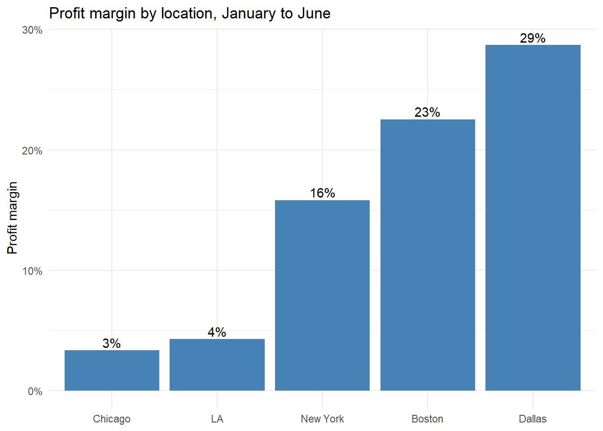
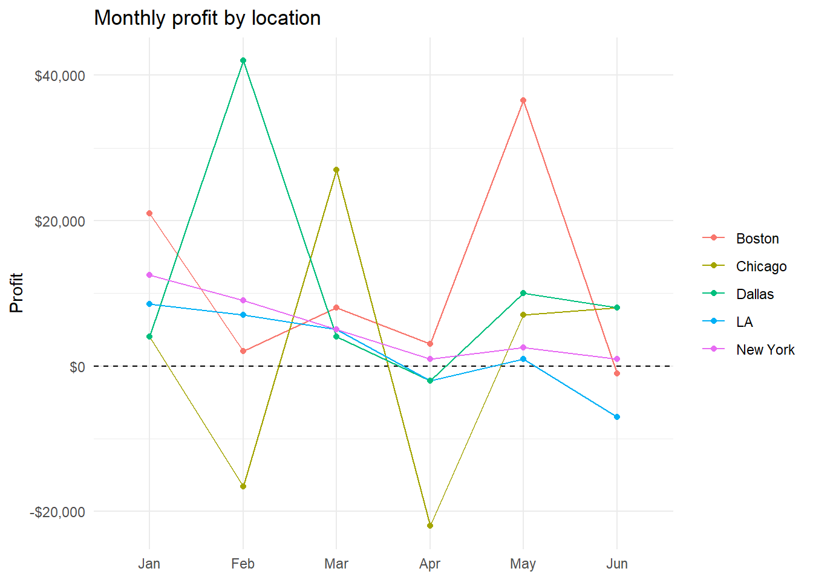
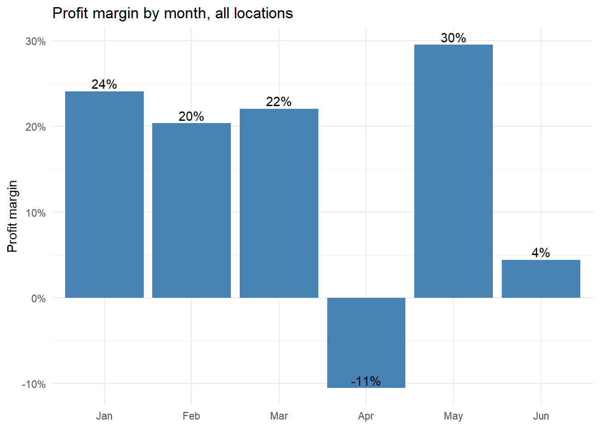

The business dataset covers five locations, each with one salesperson, and reports cost and revenue for every month from January to June. The file is messy in several ways. The column names are inconsistent (April_Cost, may revenue, Name with a trailing space), some numbers are stored as text with commas, and the February and March costs are reported in thousands of dollars ((k)) while every other column is in dollars. Each month is also split across two columns, so the data is wide and needs to be reshaped before we can compare months and locations.
When performing an analysis we should look at both the locations and the months. In this instance, we will look at cost, revenue and profit for each location, and then at how the business as a whole did in each month.
library(tidyverse)business_raw <-read_csv("https://raw.githubusercontent.com/Keenan-Roe/DATA-607/main/Project%202/5A_BusinessCostsRevenue.csv",col_types =cols(.default =col_character()))#rename the columns so every month follows the same month_measure patternnames(business_raw) <-c("location", "name", "Jan_cost", "Jan_revenue", "Feb_cost", "Feb_revenue", "Mar_cost", "Mar_revenue", "Apr_cost", "Apr_revenue", "May_cost", "May_revenue", "Jun_cost", "Jun_revenue")business <- business_rawbusiness
# A tibble: 5 × 14
location name Jan_cost Jan_revenue Feb_cost Feb_revenue Mar_cost Mar_revenue
<chr> <chr> <chr> <chr> <chr> <chr> <chr> <chr>
1 Boston Bobby 29,000 50000 50 52000 40 48000
2 Chicago Denise 41,000 45000 50.6 34000 14 41000
3 LA Ethan 30500 39000 31 38000 60 65000
4 New York April 19000 31500 22 31000 28 33000
5 Dallas Emma 38000 42000 16 58000 31 35000
# ℹ 6 more variables: Apr_cost <chr>, Apr_revenue <chr>, May_cost <chr>,
# May_revenue <chr>, Jun_cost <chr>, Jun_revenue <chr>
Wide to long
Now that every column follows the same naming pattern we can create a function that transforms the data into a clean longer style dataset, giving us the opportunity to use pivot longer to split the month and the measure apart and pivot wider to put cost and revenue side by side. We will also need to convert the text numbers into real numbers to perform some basic analysis, and put the February and March costs on the same scale as the rest. Once cost and revenue are in numeric form we can calculate profit and a profit margin for each location and month.
Using our function, we will create the clean dataset and output some basic summary statistics. One value stands out right away. Boston’s May revenue is entered as 6,150,000 while every other month for Boston is between 44,000 and 53,000. This looks like two extra zeros, so we assume it was meant to be 61,500 and correct it. Remove that step if you would rather keep the value as given.
business_long <-clean_business(business) |>#assumption: Boston May revenue has two extra zeros (6,150,000 should be 61,500)mutate(revenue =if_else(location =="Boston"& month =="May", revenue /100, revenue),profit = revenue - cost,margin = profit / revenue)glimpse(business_long)
Min. 1st Qu. Median Mean 3rd Qu. Max.
-22000 1000 4500 6213 8375 42000
Analysis
Now that we have the data in a clean data format, we can start looking at it proportionally. We will total up cost, revenue and profit for each location and each month and turn profit into a margin so that locations of different sizes can be compared fairly. We can also count how many months each location lost money. We can then present the results in different charts showcasing the proportionality.
# A tibble: 6 × 5
month cost revenue profit margin
<fct> <dbl> <dbl> <dbl> <dbl>
1 Jan 157500 207500 50000 0.241
2 Feb 169600 213000 43400 0.204
3 Mar 173000 222000 49000 0.221
4 Apr 231000 209000 -22000 -0.105
5 May 136000 193000 57000 0.295
6 Jun 194000 203000 9000 0.0443
ggplot(location_summary, aes(reorder(location, margin), margin)) +geom_col(fill ="steelblue") +geom_text(aes(label = scales::percent(margin, accuracy =1)), vjust =-0.3) +scale_y_continuous(labels = scales::percent) +labs(title ="Profit margin by location, January to June", x =NULL, y ="Profit margin") +theme_minimal()

ggplot(business_long, aes(month, profit, color = location, group = location)) +geom_hline(yintercept =0, linetype ="dashed") +geom_line() +geom_point() +scale_y_continuous(labels = scales::dollar) +labs(title ="Monthly profit by location", x =NULL, y ="Profit", color =NULL) +theme_minimal()

ggplot(month_summary, aes(month, margin)) +geom_col(fill ="steelblue") +geom_text(aes(label = scales::percent(margin, accuracy =1)), vjust =-0.3) +scale_y_continuous(labels = scales::percent) +labs(title ="Profit margin by month, all locations", x =NULL, y ="Profit margin") +theme_minimal()

Across all five locations and six months, the business brought in a profit margin of 14.9% after the unit corrections. Dallas has the highest margin at about 29%, followed by Boston at 23% and New York at 16%, while LA and Chicago are barely profitable at 4% and 3%. Dallas’s very high margin comes mostly from a single month, since its February profit of 42,000 is more than half of its six month total of 66,000. New York is the most consistent location, making a profit in every month, while Chicago swings the most with losses in both February (cost of 50,600 against revenue of 34,000) and April.
By month, May is the strongest at about 30% and April is the only month where the business as a whole lost money, with costs jumping to 231,000 while revenue stayed flat. Chicago, LA and Dallas all lost money in April, which suggests something that month affected several locations at once rather than a problem with a single salesperson.
Conclusion
The most important decisions in this analysis were the unit fix and the outlier. If the (k) columns had been left alone, February and March costs would have looked absurdly low and nearly every location would have shown a huge profit in those months. If the Boston revenue had been left alone, Boston would look like the best performer by a wide margin. The results are also based on one salesperson per location and only six months of data, so a single good or bad month can swing a conclusion. It would take more months to know whether April’s losses were a blip or a pattern, and more detail on what the costs are made of to know why they jumped. The next step would be to bring in that detail, along with the size and type of each location, to help explain the difference in margins.